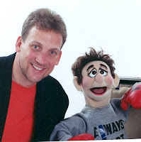

Re-Invent Vent
6/11/2009
{kind=link}

By Ken Groves
Here are six ways to strengthen your ventriloquist skills to add a touch of "mystery" to your performance.
1) Lip control is the easy part and lip control is a must. Holding your lips still forces the tongue to move. You will then feel where and how the tongue should make the sounds. Say real sounds - not substitutes. (When you get as famous as Bergen, THEN your lips can move, too.)
2) Manipulation - another must. And there’s only one way to get it - work on it! Video tape your practice. Watch the tape to SEE where you can improve. Learn from watching the video. Do not try to learn by simply watching the puppet as that develops bad habits.
3) Develop a powerful puppet voice by developing the habit of deep breathing. The number one mistake I see watching most ventriloquists is the fact, vents don’t breathe properly. No air IN means no strong voice OUT. Deep breathing makes your voice stronger and you’ll speak with greater clarity, as well.
4) Take time to develop your puppet character. It took me two years to build the character for my "George". So give character building time. Don’t make the mistake of just buying another puppet if the one you already have doesn’t seem to be immediately working out for you.
5) Create contrast between yourself and your puppet. For example, do not dress the same. You want to develop two SEPARATE people on stage. Contrast makes good comedy.
6) Visual action and reaction between you and your puppet result in good comedy that builds on the humor of the spoken words. Visual reactions such as the slow burn, double-take, rolling of eyes, and so on.
Summary: We live in an "instant" world, but building strong comedic skills does not happen in an instant. It takes practice and work. Strong comedy is harder to develop than perfect lip control. Here’s a rule that never fails to be true: "If you have weak lip control, we know your comedy is weak, too." So, begin with the basics but never let the basics be your end goal. There’s no mystery in that!
Newsy Vents 11/05